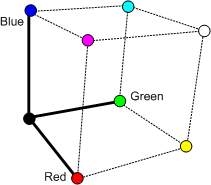

Digital video is often encoded in a YUV format. This article explains the general concepts of YUV video, along with some terminology, without going deeply into the mathematics of YUV video processing.
If you have worked with computer graphics, you are probably familiar with RGB color. An RGB color is encoded using three values: red, green, and blue. These values correspond directly to portions of the visible spectrum. The three RGB values form a mathematical coordinate system, called a color space. The red component defines one axis of this coordinate system, blue defines the second, and green defines the third, as shown in the following illustration. Any valid RGB color falls somewhere within this color space. For example, pure magenta is 100% blue, 100% red, and 0% green.

Although RGB is a common way to represent colors, other coordinate systems are possible. The term YUV refers to a family of color spaces, all of which encode brightness information separately from color information. Like RGB, YUV uses three values to represent any color. These values are termed Y', U, and V. (In fact, this use of the term "YUV" is technically inaccurate. In computer video, the term YUV almost always refers to one particular color space named Y'CbCr, discussed later. However, YUV is often used as a general term for any color space that works along the same principles as Y'CbCr.)
The Y' component, also called luma, represents the brightness value of the color. The prime symbol (') is used to differentiate luma from a closely related value, luminance, which is designated Y. Luminance is derived from linear RGB values, whereas luma is derived from non-linear (gamma-corrected) RGB values. Luminance is a closer measure of true brightness but luma is more practical to use for technical reasons. The prime symbol is frequently omitted, but YUV color spaces always use luma, not luminance.
Luma is derived from an RGB color by taking a weighted average of the red, green, and blue components. For standard-definition television, the following formula is used:
Y' = 0.299R + 0.587G + 0.114B
This formula reflects the fact that the human eye is more sensitive to certain wavelengths of light than others, which affects the perceived brightness of a color. Blue light appears dimmest, green appears brightest, and red is somewhere in between. This formula also reflects the physical characteristics of the phosphors used in early televisions. A newer formula, taking into account modern television technology, is used for high-definition television:
Y' = 0.2125R + 0.7154G + 0.0721B
The luma equation for standard-definition television is defined in a specification named ITU-R BT.601. For high-definition television, the relevant specification is ITU-R BT.709.
The U and V components, also called chroma values or color difference values, are derived by subtracting the Y value from the red and blue components of the original RGB color:
U = B - Y'
V = R - Y'
Together, these values contain enough information to recover the original RGB value.
Analog television uses YUV partly for historical reasons. Analog color television signals were designed to be backward compatible with black-and-white televisions. The color television signal carries the chroma information (U and V) superimposed onto the luma signal. Black-and-white televisions ignore the chroma and display the combined signal as a grayscale image. (The signal is designed so that the chroma does not significantly interfere with the luma signal.) Color televisions can extract the chroma and convert the signal back to RGB.
YUV has another advantage that is more relevant today. The human eye is less sensitive to changes in hue than changes in brightness. As a result, an image can have less chroma information than luma information without sacrificing the perceived quality of the image. For example, it is common to sample the chroma values at half the horizontal resolution of the luma samples. In other words, for every two luma samples in a row of pixels, there is one U sample and one V sample. Assuming that 8 bits are used to encode each value, a total of 4 bytes are needed for every two pixels (two Y', one U, and one V), for an average of 16 bits per pixel, or 30% less than the equivalent 24-bit RGB encoding.
YUV is not inherently any more compact than RGB. Unless the chroma is downsampled, a YUV pixel is the same size as an RGB pixel. Also, the conversion from RGB to YUV is not lossy. If there is no downsampling, a YUV pixel can be converted back to RGB with no loss of information. Downsampling makes a YUV image smaller and also loses some of the color information. If performed correctly, however, the loss is not perceptually significant.
The formulas listed previously for YUV are not the exact conversions used in digital video. Digital video generally uses a form of YUV called Y'CbCr. Essentially, Y'CbCr works by scaling the YUV components to the following ranges:
| Component | Range |
|---|---|
| Y' | 16–235 |
| Cb/Cr | 16–240, with 128 representing zero |
Â
These ranges assume 8 bits of precision for the Y'CbCr components. Here is the exact derivation of Y'CbCr, using the BT.601 definition of luma:
Start with RGB values in the range [0...1]. In other words, pure black is 0 and pure white is 1. Importantly, these are non-linear (gamma corrected) RGB values.
Calculate the luma. For BT.601, Y' = 0.299R + 0.587G + 0.114B, as described earlier.
Calculate the intermediate chroma difference values (B - Y') and (R - Y'). These values have a range of +/- 0.886 for (B - Y'), and +/- 0.701 for (R - Y').
Scale the chroma difference values as follows:
Pb = (0.5 / (1 - 0.114)) × (B - Y')
Pr = (0.5 / (1 - 0.299)) × (R - Y')
These scaling factors are designed to give both values the same numerical range, +/- 0.5. Together, they define a YUV color space named Y'PbPr. This color space is used in analog component video.
Scale the Y'PbPr values to get the final Y'CbCr values:
Y' = 16 + 219 × Y'
Cb = 128 + 224 × Pb
Cr = 128 + 224 × Pr
These last scaling factors produce the range of values listed in the previous table. Of course, you can convert RGB directly to Y'CbCr without storing the intermediate results. The steps are listed separately here to show how Y'CbCr derives from the original YUV equations given at the beginning of this article.
The following table shows RGB and YCbCr values for various colors, again using the BT.601 definition of luma.
| Color | R | G | B | Y' | Cb | Cr |
|---|---|---|---|---|---|---|
| Black | 0 | 0 | 0 | 16 | 128 | 128 |
| Red | 255 | 0 | 0 | 81 | 90 | 240 |
| Green | 0 | 255 | 0 | 145 | 54 | 34 |
| Blue | 0 | 0 | 255 | 41 | 240 | 110 |
| Cyan | 0 | 255 | 255 | 170 | 166 | 16 |
| Magenta | 255 | 0 | 255 | 106 | 202 | 222 |
| Yellow | 255 | 255 | 0 | 210 | 16 | 146 |
| White | 255 | 255 | 255 | 235 | 128 | 128 |
Â
As this table shows, Cb and Cr do not correspond to intuitive ideas about color. For example, pure white and pure black both contain neutral levels of Cb and Cr (128). The highest and lowest values for Cb are blue and yellow, respectively. For Cr, the highest and lowest values are red and cyan.
Â
Â